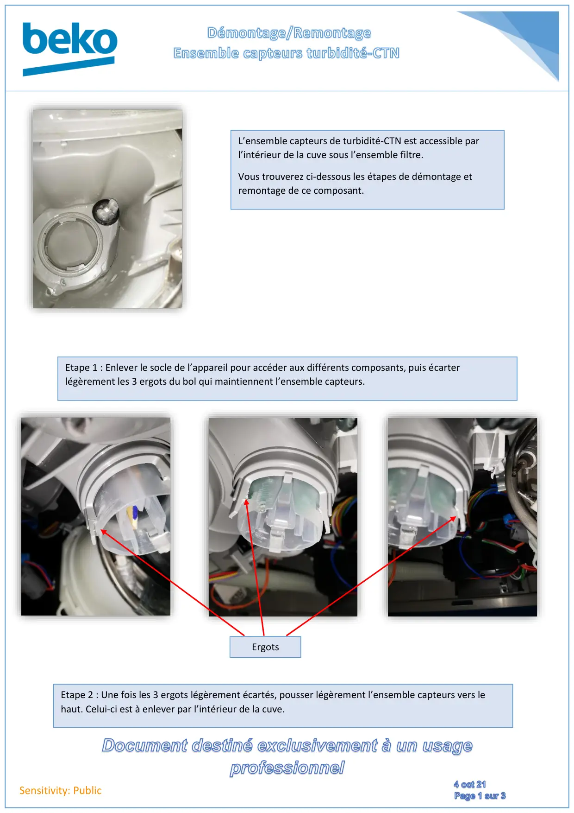
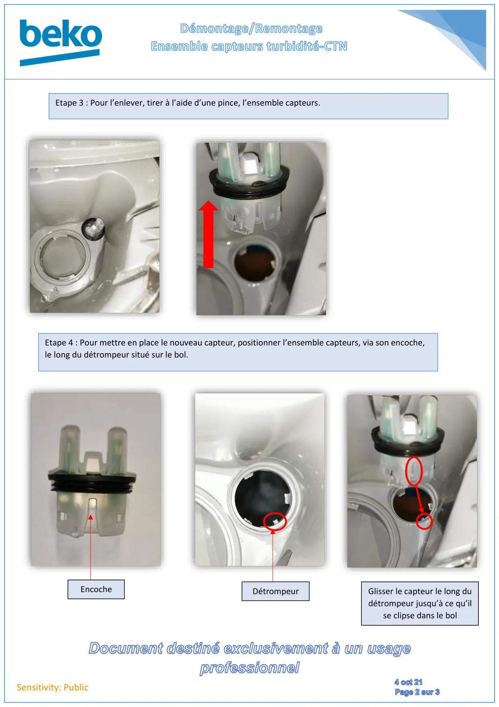
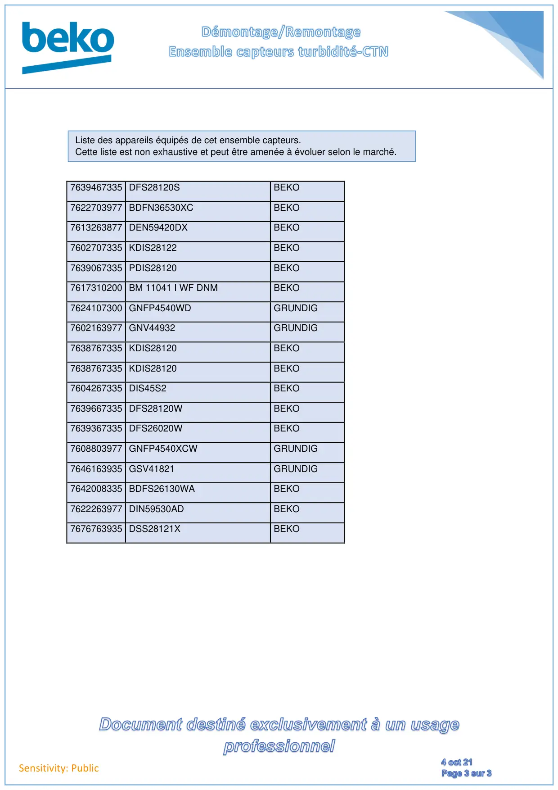

Note Technique Demontage Remontage Capteur Turbidité CTN

Sensitivity: PublicEtape 2 : Une fois les 3 ergots légèrement écartés, pousser légèrement l’ensemble capteurs vers lehaut. Celui-ci est à enlever par l’intérieur de la cuve.ErgotsEtape 1 : Enlever le socle de l’appareil pour accéder aux différents composants, puis écarterlégèrement les 3 ergots du bol qui maintiennent l’ensemble capteurs.L’ensemble capteurs de turbidité-CTN est accessible parl’intérieur de la cuve sous l’ensemble filtre.Vous trouverez ci-dessous les étapes de démontage etremontage de ce composant.
1 / 3
Sensitivity: PublicEtape 3 : Pour l’enlever, tirer à l’aide d’une pince, l’ensemble capteurs.Etape 4 : Pour mettre en place le nouveau capteur, positionner l’ensemble capteurs, via son encoche,le long du détrompeur situé sur le bol.EncocheDétrompeurGlisser le capteur le long dudétrompeur jusqu’à ce qu’ilse clipse dans le bol
2 / 3
Sensitivity: Public7639467335 DFS28120SBEKO7622703977 BDFN36530XCBEKO7613263877 DEN59420DXBEKO7602707335 KDIS28122BEKO7639067335 PDIS28120BEKO7617310200 BM 11041 I WF DNMBEKO7624107300 GNFP4540WDGRUNDIG7602163977 GNV44932GRUNDIG7638767335 KDIS28120BEKO7638767335 KDIS28120BEKO7604267335 DIS45S2BEKO7639667335 DFS28120WBEKO7639367335 DFS26020WBEKO7608803977 GNFP4540XCWGRUNDIG7646163935 GSV41821GRUNDIG7642008335 BDFS26130WABEKO7622263977 DIN59530ADBEKO7676763935 DSS28121XBEKOListe des appareils équipés de cet ensemble capteurs.Cette liste est non exhaustive et peut être amenée à évoluer selon le marché.
3 / 3